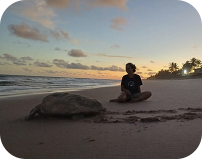
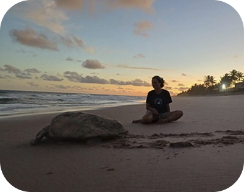

Visite
FUNDAÇÃO PROJETO TAMAR FERNANDO DE NORONHA - PE
O Centro de Visitantes do Projeto Tamar em Fernando de Noronha recebe cerca de 40 mil visitantes por ano e promove pesquisa, conservação e educação ambiental sobre tartarugas marinhas.
Atua há mais de 40 anos na proteção das tartarugas marinhas ameaçadas de extinção no Brasil. De norte a sul do país, trabalhamos para conservar espécies, educar comunidades e inspirar novas gerações a cuidar do oceano.
 

@projeto_tamar_oficial
Siga o Projeto TAMAR no Instagram e acompanhe de perto nossas ações pelo oceano!
A Fundação Projeto Tamar inaugurou em Regência (Linhares-ES) o "Espaço Praia", voltado à pesquisa, educação ambiental e conservação das tartarugas marinhas, além de apoiar iniciativas comunitárias de geração de renda.
A Fundação Projeto Tamar promove oficinas educativas em comunidades da Bahia e do Espírito Santo, unindo saberes locais, ciência e práticas criativas como pesca artesanal, animação e produção audiovisual.
A Lista Vermelha do ICMBio será revisada para atualizar o status das cinco espécies de tartarugas marinhas no Brasil.
Pode chegar a 136 cm e 180 kg, sendo carnívora com mandíbula muito forte. No Brasil, faz cerca de 9.000 ninhos por temporada.
Habita recifes e costões rochosos, chegando a 114 cm e 80 kg, com bico em forma de falcão e dieta baseada em esponjas e corais.

Pode atingir 182 cm e 500 kg, sendo a maior das tartarugas marinhas e alimentando-se de águas-vivas.
Pode atingir 143 cm e 230 kg, sendo herbívora na fase adulta e vivendo em mares tropicais e subtropicais.
O Centro de Visitantes do Projeto Tamar em Fernando de Noronha recebe cerca de 40 mil visitantes por ano e promove pesquisa, conservação e educação ambiental sobre tartarugas marinhas.
A Fundação Projeto Tamar garante sua sustentabilidade com recursos próprios gerados em Centros de Visitantes, Lojas e serviços.
O Projeto Tamar só é possível graças ao apoio de comunidades, instituições, turistas, consumidores e governantes. Cada pessoa pode contribuir comprando produtos, visitando centros ou sendo voluntário.